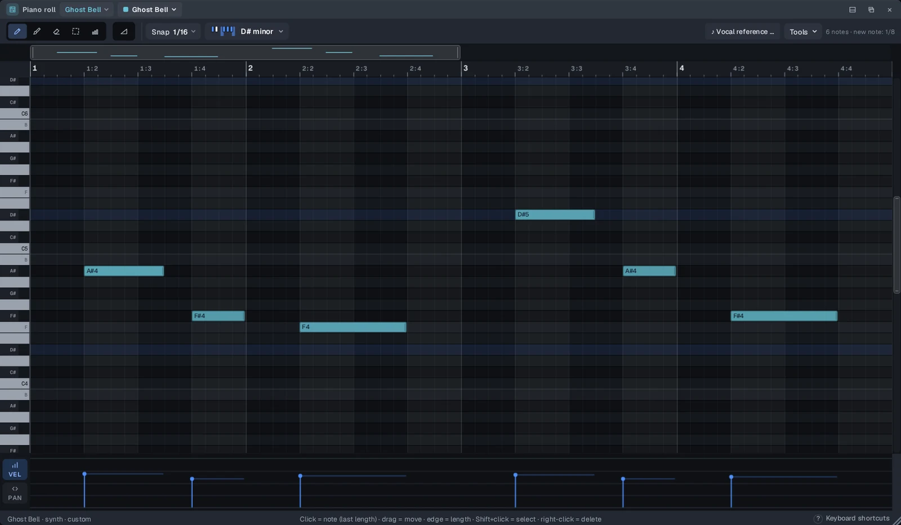

Write patterns
A pattern holds steps and notes for one or more channels. Open the Channel Rack with F6. Choose a pattern in the toolbar or click the + beside it to start a new one.
- For drums, click the step squares on a channel’s row.
- For a melody or chords, select a channel and press F7. In the Piano roll, vertical position is pitch and horizontal position is time. Drag a note’s right edge to change its length. Right-click a note to remove it.
- Use PAT and Space to audition just the current pattern.


Arrange patterns on the Playlist
- Open Patterns in the Browser. Drag a pattern onto a Playlist track at the bar where it should start.
- Drag clips to move them. Use Shift while dragging a clip to copy it. Clip edges in Trim mode change how much of the clip plays.
- Double-click a pattern clip to edit its source. To edit only that copy, open the clip menu and choose Make unique first.
- Click the ruler to set the playback start. Drag on the ruler to set a loop or double-click it to clear the loop. Use SONG to hear the arrangement.
Add samples and audio
In the Browser’s Library, click a sample to preview it. Drag it onto the Playlist to make an audio clip, between Rack rows to make a sampler, or onto a Rack row to replace the sound.
You can also drag WAV or MP3 files from your file manager. Find imported audio and takes under Audio.